import pandas as pd
import numpy as np
import matplotlib.pyplot as plt
import seaborn as snsStellar Classification and Variability Analysis Using the Hipparcos Catalog
To conduct astronomical data analysis, this project uses the Hipparcos Main Catalogue, obtained from the VizieR database (ESA, 1997). Our data contains about 100,000 stars with 80 attributes, including: - Photometry: Vmag, Hpmag, BTmag, VTmag - Color indices: B–V, V–I - Astrometry: trigonometric parallax (Plx) - Variability type: HvarType, with categories such as C, D, U, P, M, R
The goal was to explore whether static photometric and astrometric measurements can be used to classify stars into their corresponding variability types, without relying on light-curve or time-series data.
To approach this several machine learning algorithms were applied and compared, including: k-Nearest Neighbors (kNN), Logistic Regression, Naive Bayes, Decision Tree, Random Forest, and Support Vector Machine (SVM).
Exploratory Data Analysis
df = pd.read_csv("data/asu.tsv", sep="\t", comment="#", low_memory=False)
df = df[~df["HIP"].astype(str).str.contains("mag|-----", regex=True, na=False)].copy()
num_cols = ["HIP", "Vmag", "RAICRS", "DEICRS", "Plx", "pmRA", "pmDE", "e_Plx", "B-V", "_RA.icrs", "_DE.icrs", "BTmag", "VTmag", "Hpmag"]
for c in num_cols:
if c in df.columns:
df[c] = pd.to_numeric(df[c], errors="coerce")
df = df.dropna(subset=["Plx", "Vmag"]).reset_index(drop=True)
print(df.shape)
df.head()(99767, 80)| HIP | Proxy | RAhms | DEdms | Vmag | VarFlag | r_Vmag | RAICRS | DEICRS | AstroRef | ... | BD | CoD | CPD | (V-I)red | SpType | r_SpType | HIPep | Erratum | _RA.icrs | _DE.icrs | |
|---|---|---|---|---|---|---|---|---|---|---|---|---|---|---|---|---|---|---|---|---|---|
| 0 | 1.0 | 00 00 00.22 | +01 05 20.4 | 9.10 | H | 0.000912 | 1.089013 | ... | B+00 5077 | 0.66 | F5 | S | HIPep | Erratum | 0.000899 | 1.089009 | |||||
| 1 | 2.0 | 00 00 00.91 | -19 29 55.8 | 9.27 | G | 0.003797 | -19.498837 | + | ... | B-20 6688 | 1.04 | K3V | 4 | HIPep | Erratum | 0.004265 | -19.498840 | ||||
| 2 | 3.0 | 00 00 01.20 | +38 51 33.4 | 6.61 | G | 0.005008 | 38.859286 | ... | B+38 5108 | 0.00 | B9 | S | HIPep | Erratum | 0.005024 | 38.859279 | |||||
| 3 | 4.0 | 00 00 02.01 | -51 53 36.8 | 8.06 | H | 0.008382 | -51.893546 | ... | P-52 12237 | 0.43 | F0V | 2 | HIPep | Erratum | 0.008629 | -51.893546 | |||||
| 4 | 5.0 | 00 00 02.39 | -40 35 28.4 | 8.55 | H | 0.009965 | -40.591224 | ... | C-41 15372 | P-41 9991 | 0.95 | G8III | 2 | HIPep | Erratum | 0.009973 | -40.591202 |
5 rows × 80 columns
Distances in Astronomy
If we observe a star at one point in Earth’s orbit and then again six months later, when Earth is on the opposite side of its orbit, the star will appear to shift slightly relative to more distant background stars. This tiny apparent shift forms an angle at the star, called the parallax angle.
The relationship between parallax and distance is: \[
d = \frac{1}{p}
\] where
- \(d\) is the distance in parsecs,
- \(p\) is the parallax angle in arcseconds.
Because Hipparcos reports parallax in milliarcseconds (mas), the formula becomes: \[ d = \frac{1000}{p} \]
This allows us to estimate how far the stars in our dataset are. Stars with larger parallax values are closer, while stars with tiny parallax angles are more distant.
d = 1000/df["Plx"]
d.describe()/Users/dinarazhorabek/Projects/Fall25/astronomy_project/.venv/lib/python3.12/site-packages/pandas/core/nanops.py:1016: RuntimeWarning: invalid value encountered in subtract
sqr = _ensure_numeric((avg - values) ** 2)count 9.976700e+04
mean inf
std NaN
min -1.000000e+05
25% 1.066098e+02
50% 1.992032e+02
75% 3.571429e+02
max inf
Name: Plx, dtype: float64There are infinite values in the mean and maximum, which indicates that division by zero is occurring during the distance calculation. This happens when the parallax value is zero or extremely close to zero. Such entries must be removed before computing meaningful distances, because very distant stars naturally have parallaxes close to zero.
The presence of NaN in the standard deviation also shows that some parallax values are missing or invalid. These cases need to be handled appropriately as well.
Finally, the minimum distance is negative, which reflects the fact that the Hipparcos catalog contains negative parallaxes. Although negative parallaxes are physically impossible, they occur due to measurement uncertainties and noise. These values must also be taken into account when cleaning the dataset.
df_clean = df[df['Plx'].notna()]
df_clean = df_clean[df_clean.Plx > 0.1]
df_clean['d'] = 1/df_clean['Plx']
df_clean['d'].describe()count 95757.000000
mean 0.350901
std 0.597950
min 0.001295
25% 0.115473
50% 0.206612
75% 0.363636
max 9.090909
Name: d, dtype: float64Once we removed missing values and filtered out the very small values for Plx, the distance summary began to show realistic and consistent results.
plt.figure(figsize=(8,5))
plt.hist(df_clean['d'], bins=70)
plt.title("The distribution of stars by distance")
plt.xlabel("Distance")
plt.ylabel("Count")
plt.show()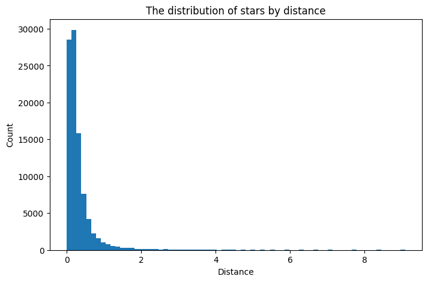
The histogram of stellar distances shows a strongly right-skewed distribution, with most stars located very close to the Sun and only a small number extending to large distances. This shape is expected for several reasons: - the calculation of distance is nonlinear, small parallax values produce very large distances, which naturally creates a long right tail. - the dataset itself is dominated by stars within a few hundred parsecs, because of the limitations of Hipparcos. It detected many bright, nearby stars but far fewer distant, faint stars. - we removed stars with very small parallax values, which cleans the left side of the distribution.
Spectral Types
SpType of stars are a way to classify stars with the O-Type stars being the hottest and the M-Type stars being the coldest.
https://en.wikipedia.org/wiki/Stellar_classification
df_clean['SpType'].value_counts()SpType
K0 7091
G5 5247
F8 3764
A0 3706
G0 3682
...
K1II/IIICNp 1
F5 + A2 1
F2:V: 1
M1Ve+... 1
F7/G0 +F8/G2 1
Name: count, Length: 3500, dtype: int64Hipparcos Catalogue contains a very large variety of spectral classifications (in total 3500). This happens because each primary spectral class (O, B, A, F, G, K, M) can include many detailed subgroups, such as luminosity classes (III, V), peculiarities (e.g., “p”, “e”), composite spectra (e.g., “F5 + A2”), or appended qualifiers.
To better understand the overall distribution of spectral types, we will extract only first letter.
df_clean["SpTypeMain"] = df_clean["SpType"].str[0]
sptype_df = (
df_clean[df_clean["SpTypeMain"].isin(list("OBAFGKM"))]
.groupby("SpTypeMain")
.size()
.reset_index(name="Count")
)
sptype_df = sptype_df.sort_values("Count")
plt.figure(figsize=(8,5))
plt.bar(sptype_df['SpTypeMain'], sptype_df['Count'])
plt.xlabel("Spectral Type")
plt.ylabel("Count")
plt.title ("Spectral Types in Hipparchos Catalogue")
plt.show()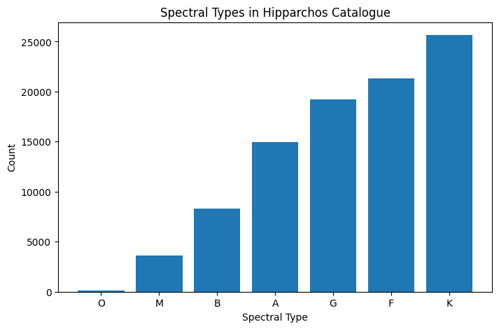
M dwarfs lie mostly below the detection limit of Hipparcos, so only a small number of the nearest M stars appear in the catalog. In reality, M-type stars are the most common stars in the Milky Way.
By contrast, A, F, G, and K-type stars are bright enough to be detected over larger distances, so they appear more frequently in the catalog. The hottest O and B stars are intrinsically very luminous but genuinely rare, while M stars are extremely common but very faint.
Magnitude
Next, let’s explore the different magnitude measurements available in our dataset. The Hipparcos catalogue provides several photometric bands, including: - Visual magnitude (Vmag) - BT magnitude (BTmag) - VT magnitude (VTmag) - Hipparcos mean magnitude (Hpmag)
Magnitude is a logarithmic measure of brightness: the lower the magnitude value, the brighter the star.
plt.figure(figsize=(8,5))
plt.hist(df_clean['Vmag'], bins=70)
plt.xlabel("Apparent V magnitude (Vmag)")
plt.ylabel("Count")
plt.title("Distribution of the apparent visual magnitude")Text(0.5, 1.0, 'Distribution of the apparent visual magnitude')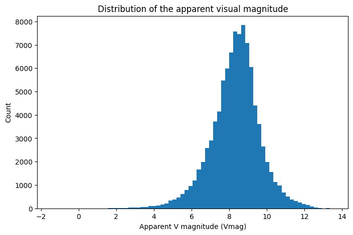
Stars with Vmag > 6 are the ones which cannot be seen by unaided eye. But from the plot we see in our data the peak is around 8 and 9 values, which shows sensitivity of the Hipparcos telescope.
plt.figure(figsize=(8,5))
plt.hist(df_clean['BTmag'], bins=70)
plt.xlabel("Apparent BT magnitude (BTmag)")
plt.ylabel("Count")
plt.title("Distribution of the apparent BT magnitude")Text(0.5, 1.0, 'Distribution of the apparent BT magnitude')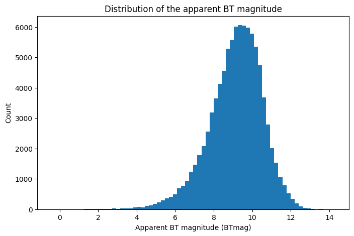
plt.figure(figsize=(8,5))
plt.hist(df_clean['VTmag'], bins=70)
plt.xlabel("Apparent VT magnitude")
plt.ylabel("Count")
plt.title("Distribution of the apparent VT magnitude")Text(0.5, 1.0, 'Distribution of the apparent VT magnitude')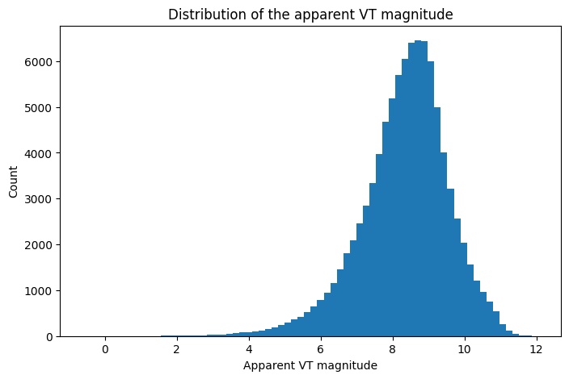
plt.figure(figsize=(8,5))
plt.hist(df_clean['Hpmag'], bins=70)
plt.xlabel("Apparent Hp magnitude")
plt.ylabel("Count")
plt.title("Distribution of the apparent HP magnitude")Text(0.5, 1.0, 'Distribution of the apparent HP magnitude')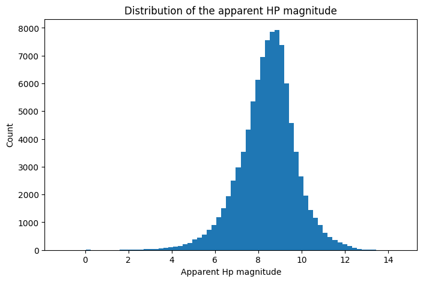
KDE Plots of the magnitude systems
mag_cols = ["Vmag", "Hpmag", "VTmag", "BTmag"]
plt.figure(figsize=(8, 5))
# Plot each as a KDE (ignoring NaN values)
for col in mag_cols:
if col in df_clean.columns:
sns.kdeplot(df_clean[col].dropna(), label=col, fill=True, alpha=0.3, linewidth=1.5)
plt.xlabel("Apparent magnitude")
plt.ylabel("Density")
plt.title("KDE of Magnitude Systems in Hipparcos/Tycho Data")
plt.legend(title="Magnitude system")
plt.grid(True, linestyle="--", alpha=0.4)
plt.show()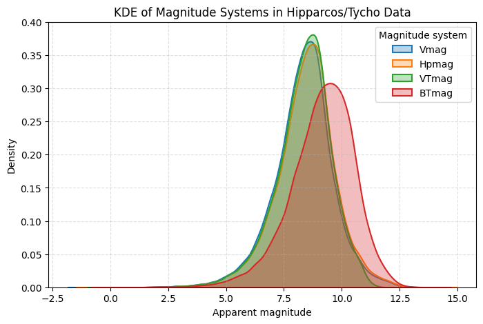
The KDE plot compares the distributions of four magnitude systems: Vmag, Hpmag, VTmag, and BTmag. From the plot we see that: - Vmag, Hpmag, and VTmag have very similar distributions, all peaking around 8–9 magnitudes, which reflects that these bands measure brightness in similar visual wavelength ranges. - BTmag is shifted to brighter values (higher magnitudes) compared to the others: - Most stars emit less light in the blue part of the spectrum, especially cooler stars such as G, K, and M types, causing their BT magnitudes to appear fainter. - Hot stars (O, B, A types) are bright in blue, while cooler stars are extremely faint in blue, which results in a wider and more spread-out BT distribution.
Overall, the KDE plot illustrates how stellar emission varies across different wavelength bands and highlights the stronger wavelength dependence of the BT magnitude system.
Variability Period
In stellar astronomy, the Period column represents the variability period of a star — the time it takes for a variable star to complete one full cycle of brightness change, measured in days.
Not all stars vary in brightness. Only specific classes of variable stars (e.g., Cepheids, RR Lyrae, Mira variables, eclipsing binaries) have measurable periods. For non-variable stars, the Hipparcos catalogue reports the period as 0, meaning no periodic variability was detected.
Period helps to identify physical properties of stars, such as radius, pulsations, or orbital motions. Some variable stars (e.g., Cepheids) follow a period–luminosity relationship, which is essential for distance measurements in astronomy.
df_clean['Period'] = pd.to_numeric(df_clean['Period'], errors="coerce")plt.figure(figsize=(8, 5))
plt.hist(df_clean['Period'], bins=100, log=True)
plt.xlabel("Period [Days]")
plt.ylabel("Count")
plt.title("Histogram of the stellar period in the Hipparcos catalog")
plt.show()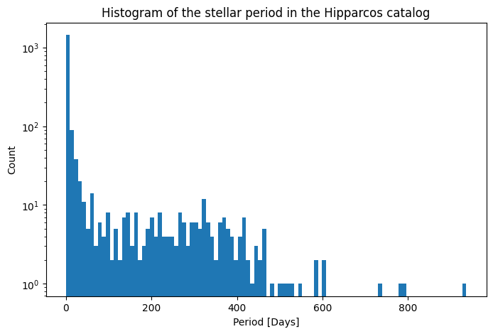
The histogram shows that most stars in the Hipparcos catalog have a period of 0, meaning they are not classified as variable stars. This is expected, because the majority of stars are photometrically stable and show no detectable periodic brightness changes.
The overall distribution is strongly right-skewed: many non-variables, and very few stars with long periods (hundreds of days).
Stellar Variability Types
The HvarType column contains categorical labels describing stellar variability types: - C – Constant - D – Duplicity-induced variables - U – Unspecified variables - P – Periodic - R – Regular variables - M – Miscellaneous variables
However, in the Hipparcos catalog, many stars have empty or missing variability types, meaning that Hipparcos did not classify them. Rather than removing these entries, we classify missing or blank values as Unknown, since the absence of a label does not necessarily mean the star is constant.
df_clean['HvarType'].value_counts()HvarType
C 38183
37981
D 9886
U 5905
P 1974
R 934
M 894
Name: count, dtype: int64df_clean['HvarType'] = df_clean['HvarType'].replace(" ", "Unknown")
hvartype_df = pd.DataFrame({
"sources":df_clean['HvarType'].value_counts().index,
"count": df_clean['HvarType'].value_counts().values
})
hvartype_df = hvartype_df.sort_values("count")plt.figure(figsize=(8, 5))
plt.bar(hvartype_df["sources"], hvartype_df["count"])
plt.xlabel("Variability Type")
plt.ylabel("Count")
plt.title("Distribution of the variability type")
plt.show()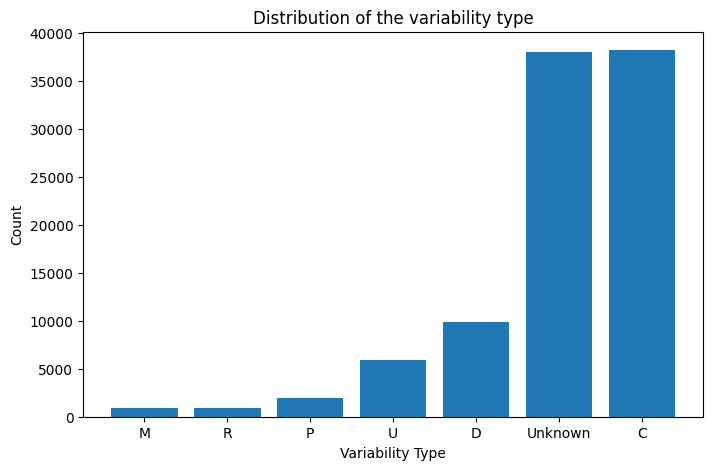
The distribution of variability types is heavily imbalanced. Constant stars (C) and stars with no assigned variability classification (Unknown) dominate the dataset, each contributing nearly 40% of all entries. Known variable classes (D, U, P, R, M) collectively form a much smaller fraction, with long-period variables (M) and irregular variables (R) being particularly rare. This reflects both astrophysical reality—most stars are not variable—and observational limitations, since Hipparcos did not classify many stars.
The Hertzsprung–Russell (HR) diagram
The HR diagram is a plot showing a population of stars relating their absolute magnitudes or luminosities to their effective temperatures.
This diagram reveals how stars are distributed across different evolutionary stages—such as the main sequence, giants, supergiants, and white dwarfs. It provides a direct visual connection between a star’s temperature, brightness, and evolutionary status.
df_clean['Vmag'].isna().sum()np.int64(0)df_clean['B-V'].isna().sum()np.int64(770)Vmag has no missing data, but B–V does. So we remove the rows with missing B–V values to make the plot clean and correct.
df_clean = df_clean[df_clean['B-V'].notna()]
df_clean.shape(94987, 82)The color of a star is obtained by taking the difference between magnitudes measured in different filters. In our dataset, the available colors are B–V and V–I.
The Color-Magnitude diagram below shows how star’s color (B–V) relates to its intrinsic brightness (absolute V magnitude). - x-axis (B–V) indicates temperature:
- Lower B–V → bluer, hotter stars
- Higher B–V → redder, cooler stars
- y-axis (Absolute V magnitude) shows intrinsic brightness.
The axis is inverted so brighter stars appear at the top, following astronomical convention.
Each point represents one star.
To compute absolute magnitude from apparent magnitude, we use the distance modulus: \[ m - M = 5 \log_{10}\left(\frac{d}{10}\right) \]
where
- \(m\) is the apparent magnitude (Vmag), - \(M\) is the absolute magnitude, - \(d\) is the distance in parsecs.
distance_modulus = 5 * (np.log10(df_clean["d"] / 10) - 1) #Calculate the distance modulus
abs_v_mag = df_clean["Vmag"] - distance_modulus #Get the absolute V magnitude of the sources
plt.figure(figsize=(8, 5))
plt.plot(df_clean["B-V"], abs_v_mag, marker='.', linestyle='none', alpha=0.3, markersize = 0.3)
plt.gca().invert_yaxis()
plt.xlabel("B-V color")
plt.ylabel("Absolute V magnitude")
plt.title("Color-Magnitude Diagram")
plt.show()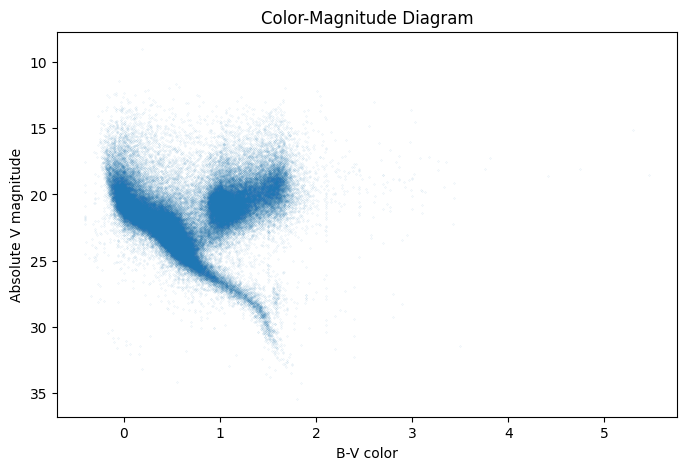
Findings from the CMD plot: - The slanted dense band is the main sequence, where most stars spend their lives. - A clump on the upper-right is the giant branch, where cooler but brighter stars appear. - Very faint red stars appear at the lower right — these are cool dwarf stars.
To construct an HR diagram, we need each star’s effective temperature. Since Hipparcos provides color indices rather than temperature directly, we estimate temperature using Ballesteros’ empirical formula:
\[T \approx 4600 \left( \frac{1}{0.92(B-V) + 1.7} + \frac{1}{0.92(B-V) + 0.62} \right)\]
This gives the star’s temperature in Kelvin based on its B–V color.
Using the previously computed absolute magnitude, we plot:
- x-axis: Temperature (K), inverted so that hotter stars appear on the left
- y-axis: Absolute V magnitude, inverted so that brighter stars appear at the top
temperature = 4600 * (1/(0.92 * df_clean['B-V'] + 1.7) + 1/(0.92 * df_clean['B-V'] + 0.62)) #Ballesteros formula
plt.figure(figsize=(8, 5))
plt.plot(temperature, abs_v_mag, marker='.', linestyle='none', alpha=0.3, markersize = 0.3)
plt.xlabel('Temperature (K)')
plt.ylabel("Absolute V Magnitude")
plt.gca().invert_yaxis()
plt.gca().invert_xaxis()
plt.title("The Hertzsprung–Russell (HR) diagram")
plt.show()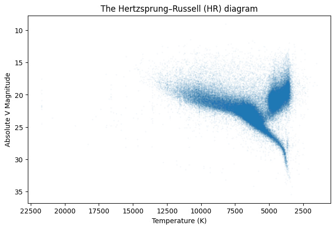
The resulting H–R diagram clearly shows the main stellar evolutionary groups: - Main Sequence:
A diagonal, dense band running from hot/bright (upper left) to cool/faint (lower right).
This is where stars spend most of their lifetimes.
Red Giant Branch:
A clump on the upper right, representing cool but very luminous giant stars.White Dwarfs:
A faint, hot group on the lower left.
Classification of stars depending on their variability type
In the next step, we train several classification models to predict the variability type (HvarType). This allows us to assess the usefulness of different features and determine which machine-learning algorithms are most suitable for this task.
The column is highly imbalanced, the majority of values is either C type or Unknown.
from sklearn.preprocessing import StandardScaler, LabelEncoder
from sklearn.model_selection import train_test_split
from sklearn.metrics import confusion_matrix, ConfusionMatrixDisplayBefore applying machine-learning models, we need to prepare the Hipparcos data for supervised learning. Our target variable is HvarType, the variability class of a star. This column contains 6 meaningful categories:
- C – Constant (non-variable)
- D – Duplicity-induced variables
- U – Unsolved variable
- P – Periodic variable
- M – Microvariable
- R – Variable with “revised” solution
However, the dataset also contains many entries labeled Unknown, which do not provide useful information for training. Since we cannot learn to “predict unknown,” these rows are removed before modeling.
features = ["Plx","Vmag","BTmag","VTmag","B-V","V-I","Hpmag","HvarType"]
data = df_clean[features].dropna(axis=0)
data = data[data['HvarType'].notna() & (data['HvarType'].astype(str).str.strip() != 'Unknown')]
data1 = data.drop(["HvarType"],axis=1).copy()
# data1.shape
data['HvarType'].value_counts()HvarType
C 37744
D 9439
U 5637
P 1863
M 894
R 884
Name: count, dtype: int64Since HvarType is a categorical variable, it needs to be encoded before training a machine-learning model.
Additionally, the feature columns must be standardized, because quantities like magnitudes, colors, and parallax exist on very different numerical scales, and many models (kNN, logistic regression, SVM) rely on balanced feature ranges for correct performance.
Because the dataset is highly imbalanced (C and D dominate), we use stratified sampling to maintain class proportions in both training and test sets.
X = data1.values
le = LabelEncoder()
scaler = StandardScaler()
X = scaler.fit_transform(X)
Y = le.fit_transform(data['HvarType'].values)
X_train, X_test, Y_train, Y_test = train_test_split(X, Y, test_size=0.5, random_state=79, stratify=Y)k-NN Classifier
After cleaning the Hipparcos dataset and preparing the features, we trained a k-Nearest Neighbors (kNN) classifier to predict the star variability class HvarType.
We tested multiple values of k (3, 5, 7, 9, 11, 13). The accuracy curve shows that performance improves as k increases, with k = 7 achieving a good balance between smooth decision boundaries and model flexibility.
from sklearn.neighbors import KNeighborsClassifier
accs = []
k_values = [3,5,7,9,11,13]
for k in k_values:
knn_classifier = KNeighborsClassifier(n_neighbors=k)
knn_classifier.fit(X_train, Y_train)
acc = knn_classifier.score(X_test, Y_test)
accs.append(acc)
plt.figure(figsize=(6,4))
plt.plot(k_values, accs, marker='o')
plt.xticks(k_values)
plt.xlabel('k')
plt.ylabel('Accuracy')
plt.title('Calculating k')
plt.grid(True)
plt.show()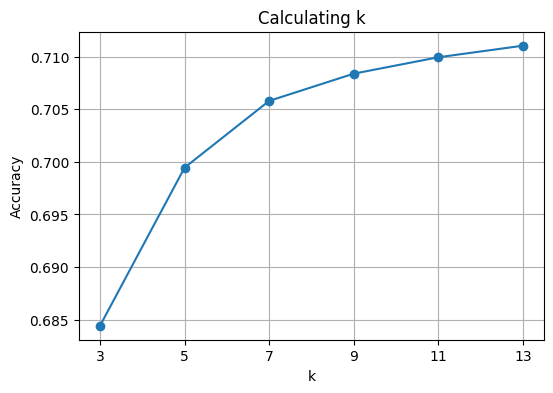
knn_best = KNeighborsClassifier(n_neighbors=7)
knn_best.fit(X_train, Y_train)
y_pred = knn_best.predict(X_test)
acc = np.mean(y_pred == Y_test)
print(f"Testing accuracy: {acc:.3f}")
cm = confusion_matrix(Y_test, y_pred)
disp = ConfusionMatrixDisplay(confusion_matrix=cm)
disp.plot(cmap='Blues', xticks_rotation=45)
plt.title("Confusion Matrix for KNN (HvarType classification)")
plt.show()Testing accuracy: 0.706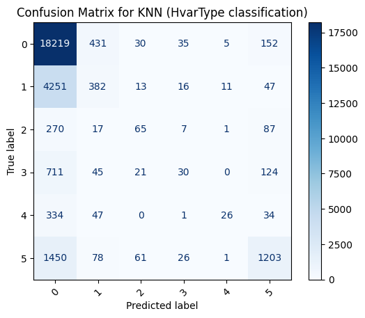
Using k = 7, we trained the classifier and evaluated performance on the test set with 0.706 accuracy.
The confusion matrix reveals how well each of the six classes was predicted: - Class 0 (C) dominates the dataset, so the model predicts it most accurately. - Rare classes (M, R, P) are harder to classify because the model has fewer examples to learn from.
Misclassifications mostly occur between similar variability types, which is expected for an imbalanced astronomical dataset.
Logistic Regression
Next, we fit a multinomial Logistic Regression model on the same standardized features.
from sklearn.linear_model import LogisticRegression
log_reg_classifier = LogisticRegression()
log_reg_classifier.fit(X_train, Y_train)/Users/dinarazhorabek/Projects/Fall25/astronomy_project/.venv/lib/python3.12/site-packages/sklearn/linear_model/_logistic.py:473: ConvergenceWarning: lbfgs failed to converge after 100 iteration(s) (status=1):
STOP: TOTAL NO. OF ITERATIONS REACHED LIMIT
Increase the number of iterations to improve the convergence (max_iter=100).
You might also want to scale the data as shown in:
https://scikit-learn.org/stable/modules/preprocessing.html
Please also refer to the documentation for alternative solver options:
https://scikit-learn.org/stable/modules/linear_model.html#logistic-regression
n_iter_i = _check_optimize_result(LogisticRegression()In a Jupyter environment, please rerun this cell to show the HTML representation or trust the notebook.
On GitHub, the HTML representation is unable to render, please try loading this page with nbviewer.org.
Parameters
| penalty | 'l2' | |
| dual | False | |
| tol | 0.0001 | |
| C | 1.0 | |
| fit_intercept | True | |
| intercept_scaling | 1 | |
| class_weight | None | |
| random_state | None | |
| solver | 'lbfgs' | |
| max_iter | 100 | |
| multi_class | 'deprecated' | |
| verbose | 0 | |
| warm_start | False | |
| n_jobs | None | |
| l1_ratio | None |
print(log_reg_classifier.intercept_[0])
print(log_reg_classifier.coef_[0])
prediction = log_reg_classifier.predict(X_test)
accuracy = np.mean(prediction == Y_test)
print(f"Testing accuracy: {accuracy:.3f}")
Y_pred = log_reg_classifier.predict(X_test)
cm = confusion_matrix(Y_test, y_pred)
disp = ConfusionMatrixDisplay(confusion_matrix=cm)
disp.plot(cmap='Blues', xticks_rotation=45)
plt.title("Confusion Matrix for KNN (HvarType classification)")
plt.show()2.4995438939128287
[ 0.14340404 -3.71061389 1.27770185 -3.77356729 0.84800724 -1.87181648
6.69495644]
Testing accuracy: 0.704
The model achieved a test accuracy of 0.704, very close to the kNN performance. The confusion matrix shows the same pattern as before:
- The dominant classes (C, D) are classified reasonably well
- The rarer classes (P, M, and R) are often confused with the more common types, which is expected given the strong class imbalance.
Logistic regression uses a linear decision boundary, so it struggles to separate subtle differences between variability types based only on magnitudes and colors.
The advantage of logistic regression is that it is interpretable and doesn’t need hyperparameters. From the coefficients of fitted model: - Hpmag has the largest positive coefficient, meaning fainter stars in Hipparcos magnitude strongly increase the probability of this variability class - Vmag and VTmag have large negative coefficients, indicating that brighter stars in these bands decrease the likelihood of this class - BTmag, B–V, and V–I contribute moderately - Parallax has the smallest coefficient, suggesting that stellar distance is not a strong predictor of variability type
Overall, the model relies most heavily on photometric magnitudes rather than distance to distinguish variability classes.
Support Vector Machines (SVM)
To see whether a margin-based classifier can better separate the variability classes, I trained three SVM models on the same standardized features and train/test split: - Linear kernel: Testing accuracy=0.702. Assumes classes can be separated by a single linear decision boundary in feature space. - Gaussian kernel: Testing accuracy=0.710. This suggests that the relationship between magnitudes/colors and variability type is not purely linear, and a non-linear kernel can capture slightly more structure. - Polynomial kernel (degree=2): Testing accuracy=0.704. Also models non-linear boundaries, but in this case does not outperform the Gaussian kernel and is more computationally expensive.
Overall, all three SVM models reach accuracies around 70–71%, comparable to k-NN and logistic regression, while the Gaussian SVM gives the best performance of the three kernels.
from sklearn import svm
svm_classifier = svm.SVC(kernel='linear')
svm_classifier.fit(X_train, Y_train)
predicted = svm_classifier.predict(X_test)
acc = np.mean(predicted==Y_test)
print(f"Testing accuracy: {acc:.3f}")Testing accuracy: 0.702svm_classifier = svm.SVC(kernel='rbf')
svm_classifier.fit(X_train, Y_train)
predicted = svm_classifier.predict(X_test)
acc = np.mean(predicted==Y_test)
print(f"Testing accuracy: {acc:.3f}")Testing accuracy: 0.710svm_classifier = svm.SVC(kernel='poly', degree=2)
svm_classifier.fit(X_train, Y_train)
predicted = svm_classifier.predict(X_test)
acc = np.mean(predicted==Y_test)
print(f"Testing accuracy: {acc:.3f}")Testing accuracy: 0.704Naive Bayes (GaussianNB)
The Gaussian Naive Bayes classifier achieved a testing accuracy of 0.646, which is noticeably lower than kNN, Logistic Regression, and SVM.
This is expected because several assumptions of Naive Bayes do not hold for our dataset: - Many features (colors, magnitudes, parallax) are strongly correlated, while Naive Bayes assumes feature independence. - The feature distributions are not strictly Gaussian, especially for magnitudes and colors. - The dataset is highly imbalanced, with classes C and D dominating, causing Naive Bayes to favor majority classes.
Because of these issues, Naive Bayes is not a good fit for this classification problem.
from sklearn.naive_bayes import GaussianNB
NB_classifier = GaussianNB().fit(X_train, Y_train)
prediction = NB_classifier.predict(X_test)
acc = np.mean(Y_test==prediction)
print(f"Testing accuracy: {acc:.3f}")Testing accuracy: 0.646Decision Tree Classifier
The Decision Tree model achieved a testing accuracy of 0.587, the lowest among all models tested so far. Decision Trees are easy to interpret but not strong classifiers for this dataset.
from sklearn import tree
tree_classifier = tree.DecisionTreeClassifier(criterion='entropy', random_state=79)
tree_classifier.fit(X_train, Y_train)
predicted = tree_classifier.predict(X_test)
accuracy = np.mean(predicted == Y_test)
print(f"Testing accuracy: {accuracy}")Testing accuracy: 0.5871205412489816Random Forest
To evaluate a tree-based ensemble model, we performed a grid search over two hyperparameters: number of trees (1-10) and maximum tree depth (1-5). For each combination, we computed the error rate on the test set.
from sklearn.ensemble import RandomForestClassifier
subtrees_num=np.arange(1, 11)
depths=np.arange(1, 6)
results = []
for n in subtrees_num:
for d in depths:
model = RandomForestClassifier(n_estimators=n, max_depth=d, criterion='gini', random_state=79)
model.fit(X_train, Y_train)
predicted = model.predict(X_test)
err_rate = np.mean(predicted != Y_test)
results.append((n, d, err_rate))
results_df = pd.DataFrame(results, columns=['n_estimators', 'max_depth', 'error_rate'])
plt.figure(figsize=(8,5))
for d in depths:
subset = results_df[results_df['max_depth'] == d].sort_values('n_estimators')
plt.plot(subset['n_estimators'], subset['error_rate'], marker='o', label=f'max_depth={d}')
plt.xlabel('Number of Estimators')
plt.ylabel('Error Rate')
plt.title('Random Forest Error Rate')
plt.legend()
plt.grid()
plt.show()
best = results_df.sort_values(['error_rate','n_estimators','max_depth'], ascending=[True, False, True]).iloc[0]
best_N, best_d = int(best.n_estimators), int(best.max_depth)
print(f"Best params -> N={best_N}, d={best_d}, error={best.error_rate:.4f}, accuracy={1-best.error_rate:.4f}")
rf_classifier = RandomForestClassifier(n_estimators=best_N, max_depth=best_d, criterion='gini', random_state=79)
rf_classifier.fit(X_train, Y_train)
predicted = rf_classifier.predict(X_test)
accuracy = np.mean(predicted == Y_test)
print(f"Testing accuracy: {accuracy}")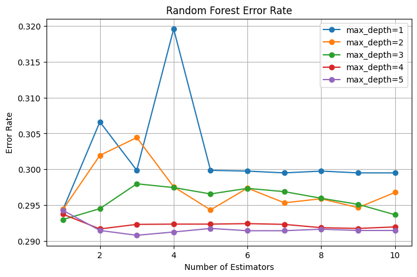
Best params -> N=3, d=5, error=0.2908, accuracy=0.7092
Testing accuracy: 0.7092203605965074From the error-rate plot, we see a consistent pattern: - Very shallow trees (max_depth = 1–2) perform worse, the model is underfitting. - Accuracy stabilizes when depth reaches around 4–5, suggesting the model captures enough structure without overfitting. - Increasing the number of estimators beyond 3 does not significantly improve performance, likely because the signal in the features is limited.
The best parameters found were: n_estimators=3, max_depth=5 with testing accuracy=0.709
cm=confusion_matrix(Y_test, predicted)
disp = ConfusionMatrixDisplay(confusion_matrix=cm)
disp.plot(cmap='Blues', xticks_rotation=45)
plt.title("Confusion Matrix for Random Forest")
plt.show()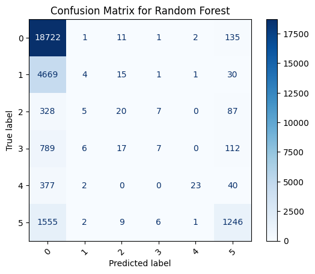
From the confusion matrix, we see that the model again performs well on the dominant classes (C and D). And minority classes (P, M, R, U) remain difficult to classify due to severe class imbalance.
Overall, Random Forest performs competitively, but like all models so far, its accuracy is limited by: - Highly imbalanced class distribution - Overlapping feature distributions between variability types - Limited discriminative power in the available Hipparcos features
Summary of Classification Model Performance
Our best-performing classifiers for predicting stellar variability type (HvarType) are: - SVM with Gaussian Kernel (accuracy=0.710) - Random Forest (accuracy=0.709) - kNN (accuracy=0.707)
These three models consistently outperform the others and capture more complex relationships between magnitudes, colors, and variability types.
Across all models, accuracy remains limited because of data imbalance. Most examples belong to just two classes (C and D), while classes such as M, R, and P are rare. Because of this imbalance, models naturally become biased toward predicting majority classes. Many stars in Hipparcos are labeled with no variability type, which we encoded as “Unknown”. These cases add noise to the learning process.